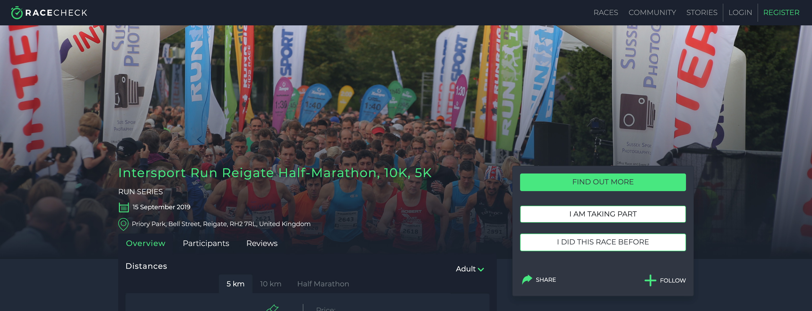
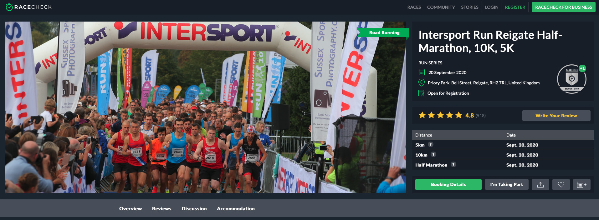

Race Pages
Designing and implementing an improved browsing experience.
Each event on the Racecheck platform has its own dedicated race page. Here, users can learn
all they need to know about the event, from organisational details to the opinions of the
past-participants.
With so much varied information being presented, it was vital to design these pages in such a way
that the user could easily access the information they needed in an efficient manner whilst also
making the browsing experience an enjoyable one.
Below is a screenshot of the original race page header - a core component of the redesign.

Some of the key issues I identified and the solutions I proposed were:
- Lack of information above the fold - this was solved by organising the most important event information
at the top of the page so the user could most likely get the info they needed at a glance.
- Poor accessibility/readability of text - seperating the image from the text not only makes the
information more readable, it also gives room for an engaging image gallery.
- Restrictive navigation - each section of the race page was previously housed in an individual 'page', which
made it difficult check quickly check or reference information in different sections. To solve this problem I changed the structure
of the race page so all information was in a single page, navigable via a secondary nav bar linked to scroll position.
It was important to design the page in a modular and easily-expandable fashion due to the fact the fast-paced growth of the platform meant
we were actively adding and removing components on a regular basis.
Below is a screenshot of the redesigned race page header.

To see the full redesign and additional features I have designed and developed on the races pages click here for an example!